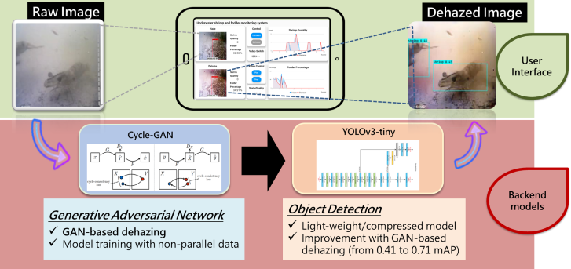
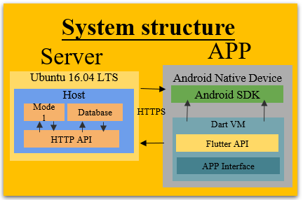

subProject 4
Aqua-culture Monitoring
 IMPORTANT TECHNOLOGY DEVELOPMENTS
1.[除霧方法]：使用CycleGAN對除霧前及除霧後水下環境進行網路學習，並使用此網路權重，對欲進行偵測的水下影片生成除霧後的環境。加入感知損失使得整個網路在提取特徵方面能更同時著重到高維及低維的表徵，得到更好的除霧效果。
2.[即時偵測YOLOv3]：擷取各種蝦子及飼料的影片，經過生成對抗網路進行除霧後，製作自己的資料集訓練YOLOv3網路。為因應趨勢，達到模型輕量化、應用在晶片上等功能，採用YOLOv3-tiny版本。
3.[系統整合]：提供原影片及除霧後影片所偵測到的蝦子數量及飼料的殘餘量狀況即時數據。透過比較除霧前及除霧後的同一幀的圖片相似度提供即時的水質環境。